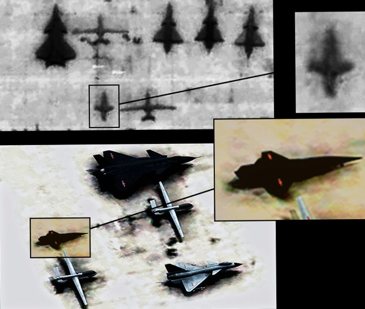

【空军】【海军】共军小道消息刷新（2015年九月特刊）
2015-09-29 21:23:00
原文网址：https://blog.udn.com/MengyuanWang/108908778
九月的消息特别多，所以就不等到下一季，在这里先做个总结。
九月3日的大阅兵展示了许多新武器，但是军迷们应该都早已熟悉了。真正惊人的消息是DF-26也有反舰型，如此一来，区域拒止的边界从离岸2000公里外推到4000公里，美国海军的航母战斗群越发难以进入攻击位置。而且DF-26的末端速度比DF-21D还高，机动的范围也更大，标准3型导弹要拦截它也就更困难。在实战上，DF-21D和DF-26的命中率都不可能是100%，但也不是0%；同样的，标准3型的命中率也有很大的不确定性。所以从战略上来看，问题是美国肯不肯让一艘价值200亿美元、载有6000名官兵的航母来冒这个险。如果赌输了，不但舰队泡汤，霸权也一夕化为乌有；如果赌赢了，则必然会受到强力的经济反击；只有做壁上观可以渔翁得利。像这样一来一往至少几千亿美元的赌注，美国人连自己的亲爹都可以弃之不顾，好笑的是日本、菲律宾和台湾却都自认比美国人的亲爹还重要，这样不知己、不知彼的玩家，天生就是炮灰的命。
综合国外的卫星照相和大陆军网上的泄密，可以确定大连造船厂是在二月就开始建造017号航母的船坞支撑架，三月开始组装舰身，目前机库已近完工，明年春可以下水。其他几个重要新型舰只的设计都已定稿，建造的时程也已确认：最快的是055级，已于年初开建，预订2016年中第一艘将上船台总装，首批建造4艘，可能追加4艘，足够为2030年前的四个航母战斗群各配置两艘；它们将是中共海军远洋打击力量的防空主力，基本型的战力已超过Burke III，改进型必然会更为可观。下一个出现的将是054B，明年年底前开建，预计第一艘在2017年年底上船台，首批订单是8艘，应该也是优先配备航母战斗群，成为中共远洋海军的反潜主力。据称其动力系统採用较成熟的混合电力驱动，舰身也没有大改，所以仍然只能携带一架反潜直升机。这听来是可信的说法：中共海军向来不会好高骛远，寧可接受不是最先进的技术，也要避免延误部署的风险；像是美军福特号航母因为电磁弹射等新技术不成熟而屡次推迟服役时间的事，在今日的共军是不可能出现的。此外我们可以预期2020年后，还将会有装备了全电力驱动装置的再下一代反潜护卫舰。
同一时段进行的还有002级航母的首舰018号，它将是共军第一艘装有弹射器的航空母舰。如同前面提到的054B一样，中共海军也选择了成熟保险的蒸汽弹射技术，没有硬上连美军都还没有实用化的电磁弹射。动力则是烧重油的蒸汽轮机；中共的蒸汽轮机技术还差美国半截，所以018号必须比美国的小鹰号小一点，以确保极速在30节以上。换句话说，它的满载排水量将是七万多吨，介于辽寧号与小鹰号之间。预计明年春在江南造船厂开建，2017年年底上船台，2019年年初下水。再下一个出现的会是四万吨（也可能是三万多吨）级全通甲板的两栖攻击舰；我原本猜测可能叫做073级，后来证实型号是075级。预计2017年开建，2018年上船台。至于伴随航母战斗群的四万吨级高速综合补给舰，型号将是901级，建造时程应该不晚于075级。
在空军方面，J-20的2016号原型机在九月11日首次露面，随即开始试飞。与先前的2015号相比，它在气动外形上完全没有变动，显然J-20在这方面的测试已基本完成；不过2016号进气口的鼓包改用了透波材料，应该是新装了某种电子设备。总体来看，J-20进度顺利，在2017年按时列装部队没有问题。日前有读者询问是否会在列装前改用自產的太行引擎，这是因为成都飞机公司在九月22日展示了一架改装太行引擎的J-10B，以致引起联想。不过虽然J-10和J-20都是成飞的產品，目前都装备AL-31引擎，太行的应用也日趋广泛稳定，但是这两型飞机有很大的差异：太行从J-10计划一开始就是它的终极引擎，在J-20计划里却完全沾不上边。从俄制的AL-31改装为太行，需要至少一年多的测试，这对早已成熟的J-10来说是有必要而无障碍的，对正在紧锣密鼓做最终定型的J-20来说，则刚好相反，是无必要而有障碍的，所以我认为可能性极小。
在九月18日，中共八股文官泄了一架“高超音速飞行器”试飞成功。根据北京清华大学网友KKTT的分析（详见http://liuqiankktt.blog.163.com/blog/static/121264211201581902333599/），基本与我一开始的猜测一致，亦即这是一架3+马赫的飞行器，使用传统的冲压引擎。不过这方面是KKTT的专业，所以他还找到了很多其他的细节：这应该是由H-6携带发射的侦察用无人机，九月9日在鼎新基地试飞，由成飞设计建造。他甚至指出一张七月拍摄的卫星照片中，成飞机场上就有一架疑似高超音速无人机的飞行器。
这里是鼎盛的一位网友根据KKTT指出的卫星照片所绘制的想像图。我认为颇有可商榷之处：首先主翼的后掠角被这位网友夸大了，其次这架飞机没有水平尾翼，所以应该用的是V型双尾翼，而不是单垂直尾翼。此外他把主翼放得太靠后而尾翼太靠前，都是美观而不实用的特徵。
本月公布的无人机，还有彩虹5号。这是一架长航时、长航程的侦察兼打击无人机，大于美军的MQ-1C而小于MQ-9，用途应该与后两者相似，适合反恐作战，所以可能是以外销为主着眼点而研发的。当然在台海战争中，在第一波打击之后，也可以用来扫荡残存的国军机动雷达、飞弹和其他重装备。至于前面提到的高超音速无人机，则显然是为突破美国海军航母战斗群的防空网而设计的，将被用来辅助海洋侦察卫星为DF-21D和DF-26做目标定位。
另一个出人意料的新曝光装备，是长程的PL-15空对空飞弹，由607所研制，几天前一张由J-11B携带试飞的照片被美军公布。与PL-12D和PL-21不同，PL-15并没有採用高效率、大航程的冲压引擎，而用了中等航程、高机动性的Dual Pulse（双脉衝）固体火箭引擎，性能指标基本与美军刚开始部署的AIM-120D相当。我认为PL-21是为J-20量身设计来对美军的预警机和加油机做远程（～300公里?）袭击用的，这些目标庞大而且无法机动躲避，适合冲压引擎。而PL-15可能只有150-200公里的射程，但是有足够的末端机动性来打击战斗机；这类的小目标不太可能在200公里以上就侦测到，即使被侦测到也能高速脱离，所以超过200公里的飞弹射程并没有什么实用意义。
最后是几件零星的新闻：上周长征-11号火箭试射成功，至此中共有了全系列的快速反应卫星发射能力，由当天可以发射的快舟火箭、隔天发射的长征-11号，以及一周内可发射的长征-6号组成。本月初中共正式展示了发展中的新重型直升机的模型，证实它採用了Mi-26的D-136引擎，但是机身和旋翼都将重新设计，预计性能与美军开发中的CH-53K相当。一篇九月初发表的褒奖八股文，透露了共军正在研发一型远程的光电侦察设备，将装备于下一代的预警机；目前没有公开的性能指标，不过其尺寸和冷却功率将远大于战斗机用的设备，因此或许能把探测范围延伸到100公里以上，这如同反舰弹道导弹和99式坦克用的主动防御雷射一样，都将是共军的独门绝活。
【后注】昨天写稿的时候主要凭记忆写，有些细节记错了；刚刚翻出笔记，做了一些更正。最重要的是017号下水应该是2016年三或四月，而不是我原本写的十二或一月。另外有读者坚持J-20用的是WS-10太行引擎，还提供了几张照片的链接。这些细节实在不是我喜欢着墨的重点，不过既然有人质疑，那么就给个回覆吧。这里是显示最新的那架2016号尾部的一张：
分辨AL-31与WS-10有几个特点可用：首先，AL-31的外衬片是双层的，没有缝隙，而WS-10是单层的，所以会有缝隙；这两个引擎的外衬片之间显然没有缝隙。其次，AL-31的内衬片比WS-10露出的长度大三倍；这里我们看不到内衬片的终点，显然不是WS-10的短片设计。最后，AL-31的外衬片没有明显的铆钉，WS-10的有四个铆钉；这里的外衬片显然属于AL-31。
113 条留言
现在的北京真是一反常态，突然间展示大量肌肉。
我一直以来有个问题，现在中国的综合军事工业制造能力和俄罗斯相比到底 处于一个什么态势？如果没有达到，在3，4年内是否可以大范围超越？
（毕竟我觉得中国其实还有大批量的科技没有秀出来。）
到2025年，中方应该可以在核潜艇以及民用火箭技术上追平，其他方面则遥遥领先。
下一步除了继续观察军备的发展之外，大陆军队的体制和结构改革也是十分值得关注的焦点之一。毕竟军队体制和组织的改革和大陆高层对未来战争的构想以及拥有的武器装备相关极大。
中国航空发动机远比想像中差，主要是中国在90年代才重点研发。比俄国差距10-20年左右，比美国差距30-40年左右。研发周期大概20年左右(根据航空报报道)。俄罗斯设计局比中国强，部分大件建造业同中国差不多，其他都比中国差。因为设计局有很多经验累积，而不外传的。制造业有部分苏联解体时，分散到不同国家。
017号2016年三或四月就下水了，争吵无益，等一等就知道了。
和美国F22相当的涡扇15真的不是你我说要马上就能要得，不花上很大的金钱和时间的代价是搞不定的，给中国点时间吧，但是只要能做出能和罗罗，洛马相当的顶尖发动机之后，中国的航空科技现代化就可以真正和美国平起平坐了。我是中国科技发展的铁杆乐观派
俄国更先进的航空引擎都只是原型机，毛病多多，不见得能比WS-15早日稳定量產。所以总体来看，中国在航空发动机上已经追平了俄国。
简氏的卫星图包括2月/3月和9月的进度对比：http://www.fyjs.cn/thread-1316057-1-1.html
以这个速度来看，16年底才下水的可能性是很小的，2月船台上还几乎什么都没有呢
题外话，简氏真不愧是世界最老牌军事杂志，尽管也有不少问题，但的确是其它军刊无法望其项背的
J-20的出现，简氏的报道比最早的网络爆料早半个月
央视2012年1月的节目视频：
www.tudou.com/.../-dfey0NEjxY/
使用WS10的图片：
mmbiz.qlogo.cn/.../0?wx_fmt=jpeg
mmbiz.qlogo.cn/.../0?wx_fmt=jpeg
对比2016发动机与AL-31F的图片
2016发动机图片：
mmbiz.qlogo.cn/.../0?wx_fmt=jpeg
mmbiz.qlogo.cn/.../0?wx_fmt=jpeg
AL-31F图片：
mmbiz.qlogo.cn/.../0?wx_fmt=jpeg
fileimage.inewsweek.cn/.../fdj.jpg
{kind=link}
如果J20用的是AL-31F，那还叫4S飞机，还叫五代机？
共军的AL-31至少有三个不同的子型号（可能有四个），2016号用的喷嘴顏色变了而已。
最新的潮流是“热发射”，可以节省这个装置所占的重量和体积，使发射井更加密集。
联合国能同意派兵的地方，基本就是非洲。中国想要进入非洲和平开发，但是这里乱成一团，又是欧洲的老地盘。拿联合国当招牌，既维持不干预他国内政的原则，又可以名正言顺地派兵保护自己的矿场和建筑商，还可以给部队锻炼的机会，一举数得，没什么不好的。
这样的成就, 当然应予肯定.
许多台湾人畏惧那些飞弹哪天掉到家门口, 有这种心理却鄙视中共, 每天和中共唱反调, 不是非常矛盾吗? 和一个强大的中国和平统一, 对小老百姓有那一点不好, 我实在是想不通.
到现在台湾的名嘴, 教授, 甚至政府官员, 都还在强调中共没有经过民主选举, 不是合法政权. 难道一定要到整个台湾被攻占, 才能闭嘴吗?
现在还只是2015年，到了2025年中国要开始与美国在全球争霸。台湾近在咫尺，却选择与新霸主敌对，正如韩非子所说，国小而不处卑，力少而不畏强，无礼而侮大邻，贪愎而拙交者，可亡也。
中国只有歼11用WS10，歼10和歼15都是用AL-31F。说明 WS10的性能，產量和稳定性都不够好，只能用AL-31F。 WS10是2008年定型的，经过那么多年生產版才 堪用，性能才比较稳定。
这种应该在网络上自行研究的细节，我已经对他很迁就，特别加了后注来详细解释，没想到他不识好歹，唉。
J-20用WS-10是一件完全没有好处、纯浪费时间的事，我不知为什么会有这么多军迷寧可做白日梦。
来这个部落格的人，就不该无限上纲、做人身攻击。你既然不喜欢我的想法，就请你不要来了，以免浪费其他读者的时间。
这里尤其要祝贺王先生的部落格成立至今点阅数已超过百万, 以忧国之心平实论述不哗眾取宠出发, 在现在这种社会环境以及短短时间里能有这样的成就, 王先生应该感到很安慰了. 因为一贯的矢志以赴其间辛苦可想而知, 但坚持事实和逻辑始终不懈, 终得广泛回响, 王先生正是能者多劳而终究开花结果, 如果我们住的近的话, 我一定找你喝酒庆来庆祝这个里程碑的到达!
最后希望这个部落格能够持续发扬光大, 造福两岸所有的中国人, 因为我相信这是我们所有人的共同愿望!
我更注重的是留言突破了2000条（不过被删的广告之类有2200多条了）。
辩证唯物主义很清楚说明了，如果你用到绝对二字的时候，你就已经错了。美国的军火巨头有能力为了他们的利益，而罔顾美国自身的国家利益，发动一系列对美国自身没有帮助，却能带给军火商大量利益的战争。这种资本架空政府的现实就说明了100%的市场经济是危险的巨兽，当自由市场培育出的资本巨兽强大到政府无法制约的时候，这个国家会为了市场经济付出代价。
我对中国现行体制的拥护有很多客观逻辑分析。其中一条比较重要的本人的看法是，现在中国的强势政府可以避免一系列“西方式民主国家”所不能避免的错误，其中之一就是政府不被财团和资本家所绑架，来制定只牟利财团，而不牟利国家整体利益的政策
一种是把中国军力上升到莫名的高度，不是这个超越美国了就是那个超越美国了，这种声音很肤浅，过分的自大就是自卑的一种表现形式。比较直观的例子就是AIP，QC280燃气轮机和涡扇10，只是在最近3年才配套成军的，也就是说很多关键技术领域，中国的积累不强
另一种是用歷史线性思维描绘中国的军事研发和军队素养。比较典型的就是多年年没打仗了，所以军队肯定烂掉了，或者是某某装备美军30年前就有了，中国刚装备，所以中国落后美国30年云云
中国既没有那么神奇，一夜之间很多美国都没有的高科技都冒出来，也没这么落后，不是别人怎么样，你晚出生几年就垂头顿足，自卑自艾。
////////////
就拿南京十四所为例，专门设计研发相控阵雷达，航空航天电子测控领域，和电子对抗设备的一个研究所。改革开放以前曾经不同时期属于二机部，四机部，国防科委，电子工业部，信產部管过，大概十年前划归国资委下辖央企中电科的子公司。这家单位很典型的从计划经济时代的国有研究机构转型为现代一个股份制公司的下属研究机构，从人才的死气沉沉到现在人才有充分上升空间，工程师和研发人员待遇不亚于华为，中兴等资本巨鱷。从完全依赖国家拨款到自主寻找项目基金和市场前景（当然主要客户也是解放军总装备部咯）。然而因为是国资委负责监察和管理，这种大型军工企业不会像洛马，波音等美国军火巨头可以直接操纵政府和国会，十四所在中国是绝对服从政府领导的。
我想说的是南京十四所在雷达，测控，电子数据链等领域，现在的研发实力非常强大，中国第一是无疑的，和美国比也不会有代差，最多只有几年差距。
我更想说的是观察中国军事技术的发展的切入角度。最正确的角度是中国的国防工业从计划经济时代，正在走向市场经济时代。而且这个转变已经快结束了，以前是国家二机部这种政府机关，没有活力，没有动力，没有流动性。现在市场化的国有军工业为了赚钱（说难听点的话），他们要互相竞争（譬如沈飞和成飞几乎就是冤家对头），比赛创新，做出最优质的武器，然后卖给解放军总装，这样他们自己有了活力，有了动力，为了他们企业自己的利益有了干劲。
中国军备发展从90年代中期开始中期起步，这一路走来的成就，也就是军事工业的计划体系到市场体系的一路走来。大方向是完全正确的，如果说中国军事科技发展到哪一步，我觉得只取决于两个因素，一个是中国整体经济实力能有多大，另一个是解放军的需求有多大。不知道有没有人能理解和同意我的观点
我还想指出正确的态度并不是搞平均，而是事实证据到哪里，我们就估计到哪里。当然这个结果通常是中庸的，但是中庸只是规律而不是原则。
即便将来也不应争霸，要行王道而非霸道。美国行霸道而衰，苏联因霸道而亡，殷鉴不远啊。
还有，大陆的战略一直很清楚，从来没有想过去和美国争霸，因为这是美国最终衰落的一个主要原因。军事是服务于经济的，但是美国过度使用军事，往往超出了其经济支持能力，所以最终衰落也在所难免。《三国志·吴书·陆抗传》：“而听诸将徇名，穷兵黩武，动费万计，士卒雕瘁，寇不为衰，见我已大病矣。”
目前大陆的目标就是西太平洋的主导权和西印度洋的航线安全，然后非洲、欧洲，但是这一切都必须以经济发展为前提，而不能硬上。在非洲设立基地的事情炒作多年，但是大陆到现在才开始，主要原因就是经济发展特别是人民币国际化的需求，而且像上面朋友所说，还可以借维和之名，尽量避免军事基地带来的霸权印象，这叫师出有名。
大陆军思维只是夸张的说法，主要是想说中国军队没有灵活运用高科技。只从陆军方面思考运用，没有灵活运用空军和航天技术。战术方面还停留在三十多年中越时期。美国军力现在是全球第一，他们演练很长时间都是蓝输红赢，红方假想敌就是中国。因此中国军队还有很大的改革的空间。
http://m.thepaper.cn/newsDetail_forward_1381030
Gary所说的报道是这篇吧，蓝军并不是29战全胜，而是27胜2负。报道也强调这支第一蓝军是全军的磨刀石，不知你是怎么得出解放军依然是大陆军思维的结论的？
朱日和蓝军在演习中的优势是变态的，有绝对空中优势和信息优势，为的是模拟未来战场中最强的敌人和最坏的情况，这种情况下红军能胜几乎是奇迹。
去年演习的公开报道，南京军区的部队在火车站就直接遭到核打击，解放军跟地球上哪个国家在什么情况下打仗能出现这种情况？
不知你是怎么得出解放军依然是大陆军思维的结论的+1
训练本该如此，只有印度和台湾之流才会在乎演习的胜负。
十年后共军有了离岸2000公里内的绝对空优，美国对日本的心理支持抵不过战事意外展开后损失航母的危险，自然会把航母撤走。
有关越南的讨论，已经离题太远，删了。
共军的AL-31都是俄国礼炮工厂的產品，已证实採用了99M1改进型，99M2是否已实用还有争议。
美国处理这些炮灰的方法，必然是在乌克兰的那一套，亦即让他们被打烂，然后再叫盟友去制裁中国，自己一分钱都不用出就可以坐收红利。
另外，我认为到 2025 年，中共只需将西太平洋纳入势力范围 (我估计统一台湾是其中一项) 即可，不需要跟着美国满世界跑。我想中共应该是要依靠经济实力做为世界一强，军事实力只是为其保驾护航，免受流氓国家的干涉罢了。
最后，我觉得中国的体量之大有一项优势。中国不需要四处侵略他国以锻炼军队，他只需要行左右互搏之术及可。导弹和反导弹，航母和反航母，坦克和反坦克，这在自家的训练场都是可以练的。偶而把军队拉出去和外国军队比赛或是演习，我认为基本足够 (当然要尽量逼真，不找剧本练为佳)。只要中国内部不出问题，我对中国崛起基本抱持乐观态度。
2025年中国航母舰队才刚成军不久，要开始与美国在全球争霸可能还有困难，美俄不断在海外练兵验証武器性能，普丁夸耀他们的飞弹射的多准，作为销售实用展示，中国的武器只有静态阅兵，如何证明在实际战场之竞争力。普丁占个27,000平方公里的克里米亚半岛，和中国在南海开拓2.7平方公里的礁岛，遭遇国际阻力所展示之魄力，实有所差别。
俄国外交部长拉夫罗夫可以在联合国总部大言不惭地说说，俄方还没打算把空袭扩大到伊拉克去，没接到邀请、询问，俄国是"斯文、懂礼貌的"，不会未获邀便去。
这话十分令人气结。
美国的真正决策者绝对是把中国当作主对手，俄国现在才有余地处处占便宜。中国的前途不可限量，不须计较短期内的小事。
自对越战争后解放军确实没有更多的大规模实战经验，但仅从这则新闻就推断出中国完全没有争霸的能力就不应该了。蓝军难道不是解放军吗？习近平掌权后解放军的演习越来越接近实战，明眼人应该知道假想敌是美军。放眼中国周边，有哪几个国家有实战经验？又有哪几个国家有实力几乎天天举行军事演习？蓝军取胜多只能说明解放军的演习难度极大，红军面对的可能是超过实战的严苛程度。三十多年没打战，很难适应现代化环境是西方对中国日益强大的军事实力的自我安慰，兄弟可千万别当真。
这一段歷史, 中国一定谨记在心, 戒慎恐惧. 目前的对台政策, 南海的军事部署, 各式武器的研发, 9/3阅兵展示武力, 前往美国和联合国宣扬和平, 都是在执行目前避免战争的大战略.
至于什么时候中国才可以为所欲为, 我个人认为中国是没有时间表的, 能拖多久就准备多久, 拖到不得已再看情况反击.
相对地, 台湾政府与人民完全没有为歷史负责的打算. 反攻復国无望, 独立也做不到, 却还拒绝思考2300万子民的下一步要怎么办. 全民的注意力都集中在选举, 大家一方面怪罪台湾会走下坡都是选举害的, 一方面又呛大陆 : “我们有选举, 你们没有”. 这不是讽刺吗?
题外话, 我和渔翁网友一样, 想像一下和孟源兄微笑握手的感觉.
赤子之心，很有伽理略的风格，祝贺！
／／不过被删的广告之类有2200多条了／／
请问有没有懂行的网友，帮忙想想法子？
这种事大概得靠中时的系统来处理，可是我和他们反映了很多次，没什么动静。
人生中无力感很强的事，到处都有，所以我蛮喜欢那句“然并卵”。
我最近发现可以用列表格式看留言，删除广告的过程就快多了。
可惜台湾本地的读者只是少数；我真是希望每个报社的主编和记者（除了写八卦新闻的专业户）都能来看看。或许台湾的记者之中八卦专业户的比率太高？
洪秀柱的竞选也是然并卵，同样只是凝聚一点人心，以待后世，结果国民党连必输的选举也不肯依原则来处理，唉。
我听说过一些中国国内的小公司，生意做得不大。理论上佣兵是非官方，在没有联合国授权的地方要保护矿场和工厂，只能派民间保安。要有真正的战力和纪律，只好安排一些官兵成建制“退役”，再“受雇”出国当保安。所以共军已经有了挂羊头卖狗肉的佣兵公司，不过因为它本质上仍在军队体系内，需求量也不大，所以不能用来吸收裁军的结果。
017号航空母舰 vs. 尼米兹号与独立号
吨数: 65,200 vs. 100,020+11,000 (胜)
舰载机: 95 vs. 90+30 (胜)
战机: J20 vs. F22/F35 (胜)
动力: 蒸汽涡轮发动机 vs. 核反应炉+蒸汽轮机 (胜)
再加上中山科学研究院自我意淫的航母杀手卡通装备。
结论: 台湾完胜
本篇讯息中,我是外行,有一个疑问,PL-15是否暗示了中共战斗机的雷达性能已超越美国,取得了空战中的优势?
共军近年来军工武器发展的原则似乎是：美军有的我们必然也要有，美军没有的我们还是要有。
绿营常在发泄表达这种" 理都懂，然并卵，城会玩，日了狗"的郁闷心情，虽然总统可选赢了，但面对强邻的无奈，日后恐常心塞。
几个月前有读者建议我回国积极参与台湾的政治过程，可是事实上台湾的政治、社会和传媒环境太过腐败，远超个人可以控制扭转的程度；只有从侧面散布理性的事实和思维才有点意义。
这世上太需要一个足以制衡美国的大国，否则类似无国界医师组织被轰炸的惨剧只会越来越多（这个新闻让我这几天都相当难过）。
话说瑞士信贷的报告应该让不少绿油油生物无比兴奋：全球军力，日本排名第4，台湾排第13。
瑞士信贷是我的老东家，他们的分析纯粹只是数钱，所以日本第4、台湾第13的意思是花钱很凶，和战力没有关系。
这个奖项实在应该颁给大陆全体以科学态度研究传统中医的人员。
其实我不懂为什么朱立伦会愿意帮王金平搞下洪秀柱。明年大选国民党必败，败后内部必有严重内斗，朱立伦联合其他人都未必斗得过王金平，出来参选反而是给对方口实。难道是王金平有朱的把柄？当然也有可能朱立伦只是和马英九一样蠢。
台湾对统独没有发言权，对文统还是武统也只有间接的选择能力。若要早日促成武统，靠的恰是对它闭口不谈的绿营。
洪秀柱的统一论，是台湾这么恶劣的政治气氛下唯一能帮国家找到出路的路线。朱为了政治斗争，逼迫洪强行否决自己的理念，也等于否决了台湾和平的唯一出路。
国民党内有理念的人已经不多了，歷史上各种亡国的剧本中，必然出现洪秀柱式的孤臣孽子，也必然出现朱立伦这即将亡国了也还要继续争权夺利的小人。
台湾政坛现存唯一的理念只剩下绿营的台独；可惜这是大环境下不可能的死路。
还有一个问题想请教,PL-15的射程比美军现役的空空导弹长一截,在目前有什么特别的作用或意义?是否可搭配陆地雷达或空中预警机及舰载雷达在局部区域取得优势?
200公里左右的射程的确会超过战机自身的探测能力，必须依赖预警机或其他感知器来做系统运作。例如B-2或F-22飞在前面，发现有敌方战机在附近，可以通知后面的自家战机发射飞弹；这样一来，前面的隐身飞机就不必露馅。
问问题之前，请先自己找资料。
如果只是想知道今年物理学奖得主的研究主题，新闻有报。难道不是应该先自行了解一下得奖者在研究什么，再针对你有兴趣又不是很理解的部份提出问题吗？至于”然并卵”更是google一下就找得到（我昨天才找过），既然有时间留言，为什么自己不先搜寻一下？网路真的很方便，请不要习惯当伸手党。
在Standard Model的理论架构下，Neutrino有质量是有些奇怪的，要称之为超越标准模型还不太够分量，但至少是过去40多年来，高能物理少数的真正进步之一（另一个是前年得奖的Higgs实验）。
想问一个比较离题的问题,请多包涵,精确制导武器及雷达都要用到重稀土对吗?重稀土目前是否只有存在中国南方地区?
此外，中国不像美国一样独霸国际媒体的话语权。美国人可以一年炸死几千个无辜百姓，还反过来只骂俄国；中国什么坏事都没干，就到处躺枪了。像是封锁稀土资源这种事还是不要尝试的好。
J20 相关视频从大概第 50秒开始。
bbs.meyet.com/forum.php
另外，仅供参考，刀口分析说：首飞用的是太行B，2011系列开始换涡扇十五，消息精准。
如果觉得我的留言无讨论价值，请删除，抱歉了。
至于刀口，他犯错太多太频繁，我自己不会去看他写什么，也建议你不要把他的话当真。像是分辨AL-31和WS-10，是中等军迷的基本功，他连这都做不到。如果他真有自信，可以开始用实名发言，那么我或许会再听听他想说什么。
你可以看看晨枫的文章；他的推测基本合理。
洪在两女相争中必输，她的两岸政策太大中国化也就无所谓，洪已67岁，人气虽高，但败战后要在2016年后抢党主席还是有困难，人气会渐散，朱原盘算2020选总统，此时冒着信用尽失又选不上的风险强出头，也坏了2020年的规划，国民党蠢的临时换将，或许真有难言之隐。
我一个父执辈曾经跟我说过一句话我至今印象深刻; 他说人最怕的就是贪跟懒. 他特别强调这里的懒除了四体不勤之外, 最主要指的是对大事的不求甚解和糊弄对付. 而我认为台湾上上下下的毛病就是这两点.
To: 莹火
解放军至今的存在, 除了武器更新外, 另外还应该注意的是他的传统. 我完全不反对打仗该有称手的家伙, 但我反对武器至上论. 除非是长矛对火炮, 不然当战争真要打到你死我活的时候, 战略战术纪律精神士气才是最后的依仗. 所以我对习近平的打击贪腐, 在对文官系统里, 我还觉得整的差不多就可以然后回归到制度的改革. 而对军系, 我则认为应该死整到底; 兵者国之大事, 死生之所繫也, 这句话古今通用.
前一阵子看到环球网的新闻; 说是有北京的新兵在入营时还在车站掉眼泪, 这个记者该被整, 老胡也该被整. 也建议中共; 大城市里的兵不招也罢.
另想再跟七公请教一下，时至今日老美为何还需压抑台独，不趁这次2016绿营上台后搞台独扯老共后脚，当真要等到2020~2030老共各方面条件成熟后才来搞不是事倍功半吗?长痛不如短痛，越来越觉得台湾这个问题还真不如赶快解决了一了百了的好...
不是不相信，但也许是我太年轻，又也许是老王老李之前搞得那些骯脏把戏手段没这么低劣，这次换柱居然是由朱亲自出手，还经过马的同意，如此高调但拙劣的手段，真是让人对国民党最后一点点遐想荡然无存。
我想很多人的心情大概都跟洪一样，不敢相信换柱是真的，说实话，在这星期以前，这样的消息一直被我认为是绿营媒体在造谣...在这个时代生活在台湾无法离开却又脑袋清醒的人真是悲哀，究竟未来的路何在?
对比叙利亚，对比乌克兰，在那越来越可能发生的武统，唯一让我庆幸的事，也许我不需要带着老母孩子坐着难民船逃难，因为我很难相信那些口喊台独的激进份子会真的有骨气拿起枪杆去对抗中共的飞机炮弹。
另外，为什么中共军队这么腐败（徐才厚、郭伯雄），却还能不断进步？是不是其实他们的军费远比公布的数值高？
至于共军的发展，主要是体现工业实力的进步。当然装备只是装备，战术和纪律还是必须先反腐才能真正改进的。
但这又如何? 这里我预测一下; 洪是被拿掉定了, 但其实无关痛痒. 因为既使蔡上台当上了总统, 民进党又掌控了国会, 他们不敢也无能搞台独(主要是因为美国因素). 所以我只希望他们上台后能干点实事, 让台湾人日子过的好一点; 当然这是指在被统一之前, 之后也没他们什么事了.
如果美国答应提供保护，就是把自己的舰队推到和中国对抗的第一线，这显然不符合美国的利益；如果美国不提供，日本不是菲律宾这种随时可以扔掉的小棋子，公开抛弃这样一个重要盟友会对美国的霸权影响很大，而且很可能会使整个东亚东南亚全部倒向中国（连日本都输了……美国连日本都不保护了……）
您认为那个时候美国更有可能采取怎样的对策？
事后可以跟小弟们说，早叫你买300架F-35，你却只买了100架，现在被打疼了，还不是靠我保护才不受共军占领吗？以日本右翼和菲律宾之流的智商，多半还是感激涕零，乖乖掏腰包採购更多军备。
绿营的核心人物我感觉也不理性，我原来以为绿营是揣着明白装糊涂，给台湾人民洗脑骗选票。但是看了绿营一些所谓的大佬的发言（譬如林浊水，赖清德，吕秀莲，陈菊等），以及绿营打手，（譬如姚立明，周玉蔻，赖中强）等各种正襟危坐的胡说八道（喜剧效果极强）
我觉得他们是真的不明白，如果不是集体性智商真的很低，那就应该是给人民洗脑的同时，洗着洗着自己都信自己瞎掰出来的这一套了。整天谩骂中国大陆我也认了，关键是很多缺乏逻辑推理的胡说八道真的让人忍俊不禁。
这在心理学上应该叫「集体性盲目」及「集体不负责」。也就是说身处一个集体中的时候会互相催眠，逃避现实，自我鼓劲，可能一开始是知道我是用一个谎言来换取利益，时间一长，所有人都忘记自己这套理论的前提只是谎言，集体性盲目，集体性不负责和集体无意识或许才是真的
ps，突然发现台湾赖姓特别多，中国大陆好像姓这个的极少
这与英国留下的互斗种子不一样，英国留下的都是几近势均力敌的势力，但在中国周边这么搞，与中国为敌的小国只会一个一个被吃掉，而以那时中国经济的规模，再像今日对俄罗斯一样发动盟友围堵也是没有用的
所以那时美国会怎样？是默认中国建立地区霸权，还是出动军队赌一把？我当然相信后者的可能很小，但我想问一下，小到什么程度
不论如何，美国等得越久，出兵的可能就越小。毕竟共军的发展很快；留着关岛在手里，还有长期的战略支点，若是丢了，那么连夏威夷也可能不保，丧失了整个太平洋就不再有翻身的本钱。
赖清德连说三次台独因为很重要(代替蔡说出真正意图)，他应是行政院长或副总统人选，配合推动修宪，将"和平统一的可能性完全丧失"，想拉美日下水，国民党蠢的临时换将，或许有外力授意。
台湾是美国的棋子；棋子反过来想玩主子是不能容忍的。
我唯一不懂的是朱立伦为什么对王金平如此放心。
台湾这两天发生的事情真是让我大开了眼界也大跌眼镜。我是真的没想到国民党会无脑到这个地步。其实无脑是假，自私是真。只能在这样德行的两党之间做选择，台湾的民主化也算是给中华民族打了大大的预防针。明年的选举几无悬念，地动山摇越来越近了......
至于美国在10-20年后的外交政策，应该是模仿英国在二战后的收缩，亦即能留在口袋里的（如香港、直布罗陀等等）就继续拖到底，留不住的就找个藉口（如“圣雄”甘地）体面回家，当然走之前要尽可能安排日后区域互斗的种子。现在在日本、台湾和菲律宾搞的这一套若是不能马上引起衝突，20、30年后再打起来也是好的。
二台中冷却燃机功率80MW等同于二台蒸汽轮机功率，船用空间大大减小。
香港人也如是, 说白了就是高等华人的优越感, 尤其是香港大学出身的那一帮"蓝血人", 这不, 最近又在折腾副校长任命问题了.
嗯，您说的也有道理，我前面只是表达我的一种猜测和担忧，未来会不会真往猜测的方向走也不一定。但大家都知道绿营政客毫无节操，会不会为了配合美国未来的战略转移而去触怒老共的逆鳞，这个可能性还是存在的。国民党经此一系列闹剧，估计彻底完蛋，以往国民党阻止绿营激进冒险的作用将彻底丧失，今后民进党只要想干什么，都如入无人之境了。台海局势会不会往最坏的情势走，取决于绿营政客的底线和美国对他们的控制渗透有多深。
网络的发展给民众提供了一个很好的宣泄窗口，当然也造成了谣言满天飞的问题，如何建立管控制度应该是下面中共需要解决的问题，不过无论民众如何，作为执政党我认为需要保持一个冷静的头脑和思路。我在国内做记者采访一位党校教授时他说过一句关于网络民意的话：听是义务，不听是权利，不盲从是职责。
另外，这些年出国游的人越来越多，很多人可以到外面见识一下发达的资本主义社会，其实也是暗含了一句话，没有调查就没有发言权，就如同香港和台湾，随着距离拉近，很多问题暴露，华丽的外表也自然脱下（王先生之前讨论中共接济台湾难民问题，其实我确实没有放在心上，也是这种思想没有转变）。
你说的大陆民众更愚昧我不能苟同，毕竟大陆经历过文革，反左反右，直到今天还有各种左右思潮在对抗，所以没有政治场地演练一说不知道从何而来。从抵制PX项目，到抵制日货，大众心理在这方面确实抵抗力很弱（有本书乌合之众写的很好，可以参考），但这并不是中国一家之情，据我在日本观察，日本民众被洗脑的情况也不少，之前的评论里我也提到过。
归根结底，应该是中共在过去二十年为了改革发展放弃了一定的话语权（经济实力决定一切），使得国外被不断抹黑，而国内目前很多媒体也只会跟风盲从，缺少自己的理念，或者说不认同中共的理念，懈怠工作。那些拿NGO钱的就更不用说了，好在殷鉴不远，苏联解体和台湾香港的沉沦，其实给了大陆很大的警示。这些问题随着中国实力的不断上升，自然会回到议题当中，实际上现在关于这些的讨论越来越多，说明中共有意识在重新夺回话语权。
可能是我表达不清，我的意思是：中共已经很明白地表明底线，就是台湾现在再怎么闹，只要没跨过法理台独这条底线，中共政府就不会优先处理台湾问题，这点已经是眾所皆知的事，也是国际社会的默契。但是如果台湾领导人搞法理台独，就等于一个中国原则被破坏，不管是台湾自己犯蠢找死，还是基于美国授意而这么做，都不怎么重要了，就算中共出兵统一台湾被美国泼脏水又如何呢？被美国泼脏水也不是第一次（美国连无国界医生组织都敢炸，还有什么做不出来？），但中共政府却有足够理由告诉国际社会：他们是被逼的。
”一个中国”原则，就如同王先生所说，已经被美国等西方国家喊了四十多年，台湾自己单方面破坏掉这个默契（不论是否基于美国授意），都等于给中共一个好理由：不是中共想打台湾，是台湾自己作死逼得共军不得不出兵维持法统。共军师出有名和中共自己宣示正式处理台湾问题，进行统一大业是完全不一样。至少会使美国泼脏水的杀伤力降低很多。
至于台湾流亡政府？大陆现在会把王丹这种跳梁小丑当一回事吗？台湾人根本没有打仗的勇气，一旦认清新政府不会像马英九政府一样任人拿捏，大部分人就会乖了（包括绿油油生生物们），更何况中国和台湾除了政治体制外，文化、语言、方言、习俗几乎没有差别，这与印度及巴基斯坦不同。
以上也只是一些个人浅见。
无论如何，”换柱”若成，国民党基本上就完了，我是桃园人，加上多少能知道一些内部消息，朱立伦是什么样的人，他会用什么样的人，我有一定了解，很多浅蓝的人是不会投给他的，他的人马还曾经在蓝营大票仓被深蓝浅蓝一起抵制落选，如果他认为自己很有人气就大错特错了。
另外，我有个提议，”换柱问题及其可能的衍生效应”这个议题，既然王先生暂时没有足够资料写专文，它又足够重要，想讨论这个议题的朋友要不要先移到『听其言而观其行』这篇台湾专题文章作讨论。
其实《如果我是总统候选人》就是一个合适的论坛。
这个世界真的让人哭笑不得 八国联军把中华文明给打的解体了 现在香港台湾反而帮着这些匪徒对付自己的同胞 然后西方人对此还洋洋得意 同时香港台湾还自以为是自己是文明人 高人一等
我的天 如果台湾加入tpp把自己和美国绑在一起 那除非军事手段 否则整个中华文明的一块就会长期分裂
从宏观上去看 中国一直在实验社会主义和自己的那套哲学理论 不管成功失败 都会对人类文明带来贡献 现在居然为了短期的利益 这么多人想去打烂他围堵他 真的是匪夷所思
有点气糊涂了 文章有点不通顺 不过我实在不想改了 博主见谅
另外 大陆网友 第二个梯子的技术问题解决了 以后可以稳定浏览了
第一个梯子夜晚稳定速度快 第二个梯子浏览人多的时候会不定期抽风 大家酌情选择
西方仇中有重要的种族歧视成分（欧洲和日本尤其如此），我也不懂为什么台湾人看不透这点。
博主最让我钦佩的一点就是说话不留余地，间接又深刻。我极少佩服人，而在这里我一直是博主的坚定粉丝，我也是一直以来真真正正以学习的心态在读帖。
中国现在虽然在表面上已经越发远离了实质上的“万恶的民主”，但是喜欢听让自己愉悦信息的大陆老百姓在网上多呆几年后，其实思维和台湾老百姓也没什么两样，凡事都是骂，，其实老百姓天天看那些能让自己娱乐的帖子最后就是自我愚民，其原动力其实就是互联网的民主后，群众会养成一种否定权威，拥抱娱乐，自我无限抬升的心态。
我们想想两岸都是各自一个政府，但是大陆这边的人口太过庞大，虽然没有实质上的民主，但是互联网上的“另立中央”在接下来的几年里会让大陆政治的执行力越来越低，政府办事也会走台湾之路，越来越惧怕民意。这一点在地方政府上会越来越明显。当老百姓在网上各个都能骂政府的时候，这个原因反而才是最大的问题所在。这个时候政府啥事都不敢做了。只要做一件事，哪怕是为了整体，未来好得罪了一些人，那么其他的人就会煽动其他老百姓去仇恨政府。
另外，我在这里还是要重复一个观点。这个观点博主在前文中已经重复了。
近四百年来，没有一个强权是因为民主制度起来的，但是现在的强权，都是都在因为民主制度慢慢衰弱，不能自拔。现在他们想多拉几个垫背的。
美英何其老道？逼着别人用民主，其实我看就是在扰乱内政来消除潜在的竞争对手，想想印度12亿人口发展民主那么多年，居然还是不如其之前的宗主国英国，英国只有区区6000万人口，只是印度的20分之一。2015年的中国在国力方面早就甩开英国了。所以，英国的战略成功“摆平了”印度。英美一起就摆平全世界的潜在对手。
庆幸，台湾的失败让中国成为了例外。
博主在博客一再强调岛内的愚民，其实博主不知道的是，大陆的老百姓更愚昧，只不过没有政治场地来演练一番。我前几年已经目睹过其“力量”了。据我观察大陆的民智开发比台湾还要落后最少10年，比日本落后20年。
民主就是愚民和暴民的政治。
这点，柏拉图和亚里士多德的政治论述和他们在世界文明史的地位已经可以让这三千年来西方世界所有道貌岸然的专家，哲学家，政治家闭嘴。
我自己见识过大陆的网上愚民，知道你指的是什么。
我个人觉得美国反独，抑或是美国支持台独，不是一成不变的，要看客观条件的变化，美国也会根据客观条件的变化进行最符合自己利益的取舍。举个例子就好比中华民国的党国时代，政客说"忠党爱国"，就是无比的政治正确，但在民主化后，这种口号就成了选举政治的票房毒药。
美国现在反台独，只因自身是亚太老大，拉了日韩新澳纽菲等一干小弟，必须要有做老大的表率。而台独会招来战争，将导致美国陷入两难困境：不帮的话将被盟友们看透其外强中干的纸老虎本色，帮了的话自己要受重伤，所以就吓唬住绿营不得台独。这时候美国是积极反独的。
2020年之后随着中国崛起，美国将被排挤出东亚（其实现在这种趋势就已经渐渐明朗，韩国已经开始很明显的向中国靠拢了），那时候它对东亚发生的事情已经鞭长莫及，东亚的小弟们将被中国拉入势力范围，美国已不再是东亚老大，那么上面提到的两难困境将不复存在，那时自然是希望东亚局势越乱越好，然后美国在旁边看戏，并谴责下中国给自己戴上道德高帽之类的。反正也是拿其他国家人民当炮灰，美国又没有什么损失。
历史上有很相似的例子，那就是英国的印度战略。起初印度是英国殖民地，英国是绝对不希望印度乱起来的，二战时日本侵略印度，英国派兵誓死抵抗，只因为印度这块地是它的，它自然不容许外人来破坏自己的利益。
但是二战后印度独立，英国被赶了出去，此时这块地和它已无关，但英国自然不会甘心失败，所以在滚蛋前埋下印巴分治这个炸弹，然后在旁边幸灾乐祸地看印度和巴基斯坦打得不可开交，此时英国又巴不得印度地区乱起来了，而且越乱越好。
以上是我个人的一点浅见。
到2025年后，中国开始巩固西太平洋霸主的地位，美国不须鼓动台独，只要支持拒统就可以引发战事，届时占据道德高点，收穫更大得多，何乐不为？
突破了先进间冷循环燃机总体气动热力与结构设计、机上紧凑型高 效低损失间冷系统、高性能压气机与动力涡轮、高温高效燃烧室、全权限数字式控制系统等关键技术，实现ISO条件下，热效率为42.2%,超过同档功率世界 最先进的英国船用燃机MT30。
m.guancha.cn/.../2015_10_08_336790.shtml
几年前有一则新闻讲中国请乌克兰专家改良QD280，提高功效，降低耗油量丨，中国提出使用中冷却装置，功效提高到40%，乌方提出使用双循环，降低油耗。现在这台燃机很有可能是双方结合的最终產品。这台產品体积大，只能在航母这类大型船使用，王先生觉得17号航母有没有可能使用呢？
最终020号即将改为核动力，关键技术还是蒸汽轮机，所以投资应该会继续集中在蒸汽轮机上。
另台独是绿营执政的目标，此时不干待何时?美国想到十年后逐渐要退出西太平洋，此时不靠TPP搜刮一番待何时?
台联党控告朱立伦劝退洪秀柱违反“总统副总统选举罢免法”(www.guancha.cn/local/2015_10_08_336791.shtml)。
看来李登辉的 "我是「不是我的我」" 把全台湾的政客都给洗成白痴了...
若蔡英文真在上台后修宪，某种程度就是法理台独了，这与其说是给中共下路障，倒不如是给中共出兵的好理由吧？王先生在上面回应OVL朋友的留言也说过了，让共军师出有名可不是欧美政府希望看到的。
聊聊当年马英九选举时的情况，记得当年那些名嘴是非常支持马的还把马夸的超级无敌的好，说连大陆这边也非常喜欢马，而当马第二轮当选后，这些名嘴开始变调了，开始以打马为己任，把马说的一无是处，这是为什么，背后的原因，个人猜测美国想让另一个党的候选人来当总统了，可以看一个现象，从蓝到绿基本没有名嘴公开讲过蔡的不好，最多就是质疑一下蔡的两岸政策。
一般人常骂国民党内斗内行、外斗外行，其实只是勇于内斗而怯于公战，没有什么是内行的。
他们可能没骨气去打仗，但是在共军真的登陆之前，做最后一次的岛内整肃是有可能的，战争动乱期间，人怎么死的是讲不清楚的，228到现在版本还是很多种，
趁火打劫也是常态，氛围不对的时候，能跑还是早点跑。
偶尔还是会在一些论坛，看到那种如果开打，就要把XXX都杀光的偏激言论，只是不知道有这种想法的占多少比例；另外，也有些人是希望早点打起来，他就可以去法国寻求难民庇护了。
我也有此怀疑，美国已经开始为今后10年的台海战略布局了，往后的10年，东亚地区将越来越脱离美国的掌控，所以现在就开始埋钉子，美国对台湾政坛控制之深，恐远超很多人的想象。美国一方面通过指示“换柱”等手段，强令国民党瓦解自身未来的选举潜力，以确保蔡英文2020年顺利连任，这样就可以让蔡英文在2020之后第二任期内推动修宪（第一任期内法理台独对美国不利，美国仍需表态反独），而2020-2025这个时间段，正是东亚面临中美掌控权交接的时期，美国是不会甘心就这么被中国排挤出东亚的，自然要在被踢出去之后搞点事给老共出难题，这时候台独反而又变成美国的较佳选项了。
至于蔡英文，估计已经和美国达成利益交换（说利益交换其实太抬举蔡英文了，美国主子发话，她只有照办的份，哪敢讨价还价），那就是蔡英文在第二任期内拿台湾和老百姓当炮灰帮美国做局，而美国承诺一旦老共开打，将保证她的人身财产安全，并安排她与民进党一干核心人物流亡美国做寓公，并在美国组建台湾国流亡政府，就像支持达赖那样，让台湾国流亡政府时不时在国际上跳出来恶心下老共。
给 "正心" 网友。台独是一种宗教，教主在这一方面必需要做到如同相信上帝一般的程度，所以我对蔡英文的态度不意外。最最让我无言的是国民党这一群演员，演戏演到底下观眾都快散了，还在沾沾自喜自己的演技。
您远在12845公里外的美国东部，希望能谅解此地这些悲观的感受。
我周遭有许多台独的高级知识分子，他们常说不建国完成是极大精神压抑，近乎宗教狂热，最近他们眉开眼笑说"好了，时机到来，不管如何，总是要试一试"
，救世主上台，教徒看见希望了。
至于蔡英文，我到不怕她装白痴骗选票，反正这套把戏也早已见怪不怪了。怕就怕她是真白痴，蠢话说多了连自己都深信不疑，到时不知会害惨多少老百姓，她自己反正没事，就像有网友说的，事情搞砸了大不了拍拍屁股去美国做寓公。
喊台独，改国歌歌词，改国体国号，老共也可能让蔡把戏继续演下去，到第二任底2024年，"蠢话说多了连自己都深信不疑"时，真的修宪搞法理台独，届时习(2013 ~2023年)下一任任职稳定后就可处理台湾问题，可能于2025年底，蔡也正好下台拍拍屁股去美国做台湾共和国流亡总统。
台独一直都在等时机，等中共内部动乱，未来八年期望美日TPP能将老共拉下。
个别事件还不会死很多人，就怕一二八再来一次！
白狼等有实力的团体，须预备应急方案，让台岛上的中国人自保，以待王师解放。
贫苦民眾的传统也是以自杀为主，很少有因经济困境而随机杀人的。
转单吧，习大大，把您这次访美的伴手礼「波音大客机300架」及「天津设立波音客机组装厂」统统转给英、德、法合组的空巴公司。
美国生怕别人不知道他要来了。一个月前就放出消息，之后每一周都要强调一次，昨晚又公开一次。加上几个月以前的cnn飞机采访，就可以看出来纯粹是虚张声势，生怕小弟认为老大不行了。美国人之前就从来没在南海晃悠吗？他一直都在那，所以其实现状没有什么改变。
主观上我们觉得失了面子，客观上海军实力跟美军还差一个数量级，所以跟他直接对抗确实没好处。但是岛礁建设不能慢反而要加快，等到三大基地部署了战机，就有条件划南海防空识别区了。黄岩岛也可以考虑填起来。
中国能用的牌还有很多很多，军事上跟美国直接对抗是以己之短攻敌之长。
第六条 外国非军用船舶，享有依法无害通过中华人民共和国领海的权利。
外国军用船舶进入中华人民共和国领海，须经中华人民共和国政府批准。
www.npc.gov.cn/.../content_4562.htm
如果是中国领海，那美国军舰进入按中国法律确实是非法的。中国外交部虽然只说临近海域，但也是声称非法。
国际仲裁法庭廿九日针对中国大陆与菲律宾南海仲裁案，判定仲裁法庭具管辖权，由菲律宾所提仲裁案，将我国领土太平岛降格为「岩礁」，否认台湾对太平岛领土权，外交部昨天发布声明，强调未来将不承认国际仲裁法庭仲裁结果。
大陆三番两次邀请台湾共同维护南海主权，台湾政府及政党却只幻想与美日联手打败中国大陆，结果呢？这不叫现世报那什么才叫现世报。
我想DPP上台后情势会更糟，DPP政府放弃一直以来中国民国政府对南海声索权的可能性很大，其一讨美国欢心；其二挑衅中国大陆并测试中共的反应（DPP认为这不属于踩统独议题的红线，但又无限接近于踩红线，中共除了让国台办发言人出来骂几句别无它法，因此是进行压力测试的绝佳劫材）。
实际上前不久蔡英文早已有预示，她说“不会放弃太平岛主权”，请注意，她说的只是“太平岛主权”而不是国民政府一直声称的“南海主权”（包括东南西中各沙群岛在内）
只是可惜了，一旦申明放弃南海主权，以后台湾在南海的渔业、海洋资源等争端中将更加被动，其利益将被东南亚各声索国彻底漠视。只是，拼命想与中华民国做切割的DPP是不会管什么国家与民族利益的。
//
请博主明示这个论调的逻辑荒缪之处，解答我们心中疑惑.
民粹主义和民粹政治是什么？ https://www.zhihu.com/question/21669219
这回高清大图，不用有异议啦~~~lt.cjdby.net/forum.php